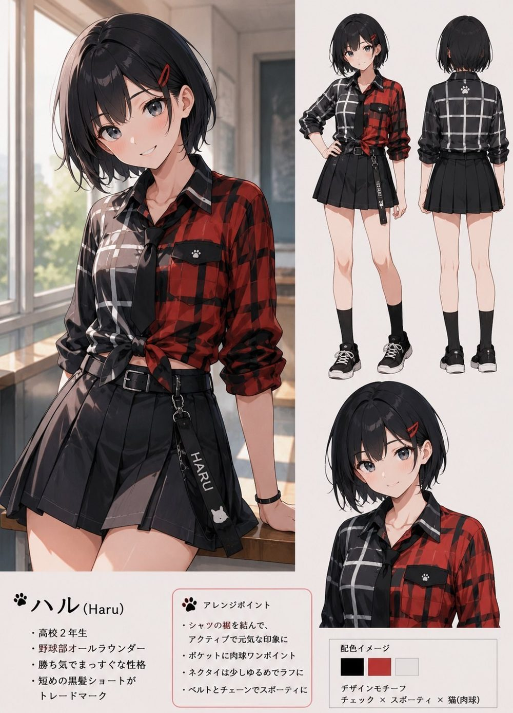
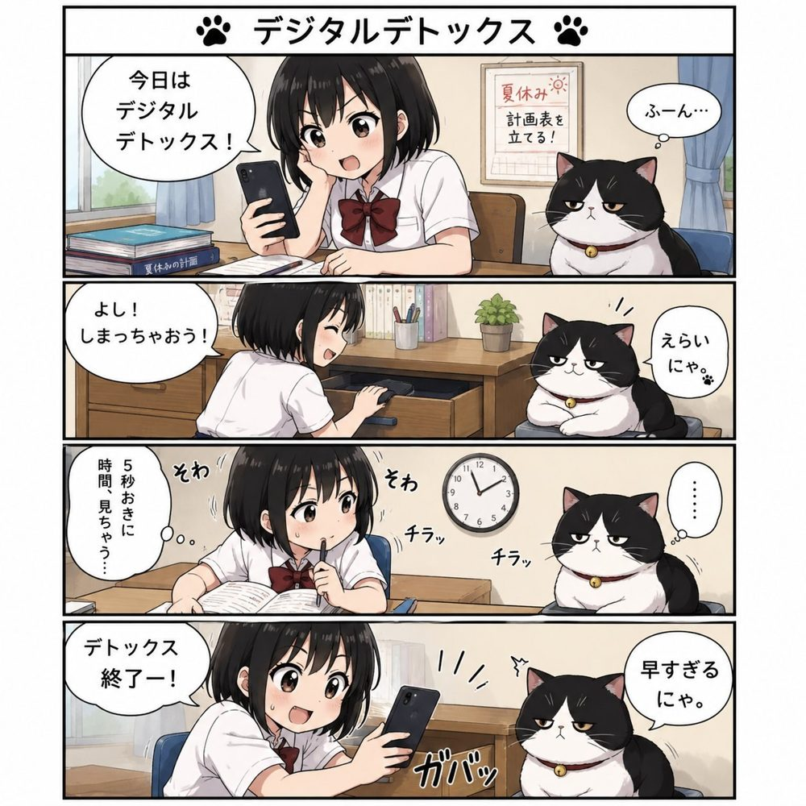
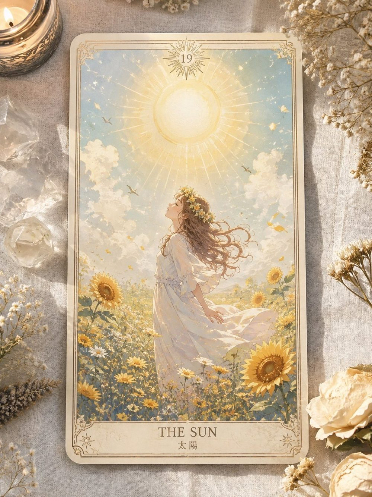

漫画・イラスト
『ハルとぶすねこ』の4コマ漫画とキャラクターデザイン。人物の一貫性、画風の選択、場面構成を考え、AI支援によるビジュアルを企画・比較・選定・編集しています。
掲載作品を見る →著者：月井蒼
全力な少女ハルと、省エネなハチワレ猫・ぶすねこ。ふたりの温度差から生まれる、日常の小さな笑いを4コマに。
漫画からキャラクターデザイン、電子書籍、LINEスタンプへ。AI支援による制作と手直しを通して、同じ世界観をさまざまな表現へつなげています。



掲載画像は公開用のAIイラスト制作実績集から選定しています。AI支援による制作物です。画像を選ぶと拡大してご覧いただけます。
創作から技術、発信、舞台まで。公開作品や本人の公開発信で紹介できる内容を、分野ごとにまとめました。
『ハルとぶすねこ』の4コマ漫画とキャラクターデザイン。人物の一貫性、画風の選択、場面構成を考え、AI支援によるビジュアルを企画・比較・選定・編集しています。
掲載作品を見る →『ハルとぶすねこ 第1巻』は全51作品を収録。2026年11月26日に公式Xで電子書籍発売を告知しています。
第1巻の公式発売告知 ↗販売ページへの直接リンクは掲載していません。
『ハルとぶすねこ』のキャラクターをLINEスタンプへ展開。公式Xプロフィールで発売中と案内しています。
公式Xの案内を確認する ↗購入先は公式発信をご確認ください。
この分野の公開アプリ・配布先は、本ページでは紹介していません。
公開中のWeb制作例として、このポートフォリオをGitHub Pagesで運用しています。
ポートフォリオのソースを見る ↗Xで作品・日々のビジュアル・発売告知を発信。noteでは漫画の公開と作品紹介を行っています。
Xを見る ↗自動化の導入事例や運用数値は掲載していません。
公開用実績集では「企画 → 反復 → 比較 → 選定 → 編集」の制作工程を紹介。用途・媒体・トーンを定め、複数案から表現を選んで仕上げています。
業務導入事例や削減時間などの数値は掲載していません。
関連する表現として、公開用実績集に収録した「太陽のタロットカード」を掲載しています。
カードのビジュアルを見る ↗鑑定実績・料金・鑑定予約の案内は掲載していません。
元舞台役者の創作家。公式Xプロフィールで、舞台役者としての経歴を紹介しています。
公開プロフィールを見る ↗公演名・役名・出演年などの詳細は掲載していません。
『ハルとぶすねこ』の著者。元舞台役者の創作家として、漫画やイラスト、キャラクターの表現に取り組んでいます。制作にはAI支援と手直しを用いています。
第2版・2026年11月27日更新。公開発信と公開用実績集で確認できる情報を掲載しています。販売・予約の条件は各サービスの最新の案内をご確認ください。